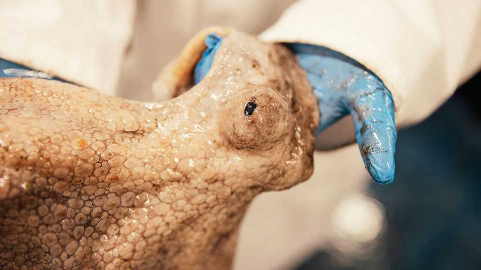
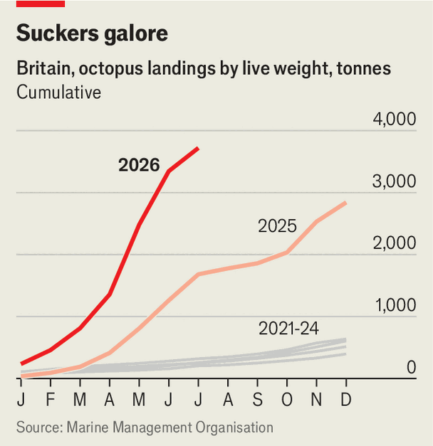
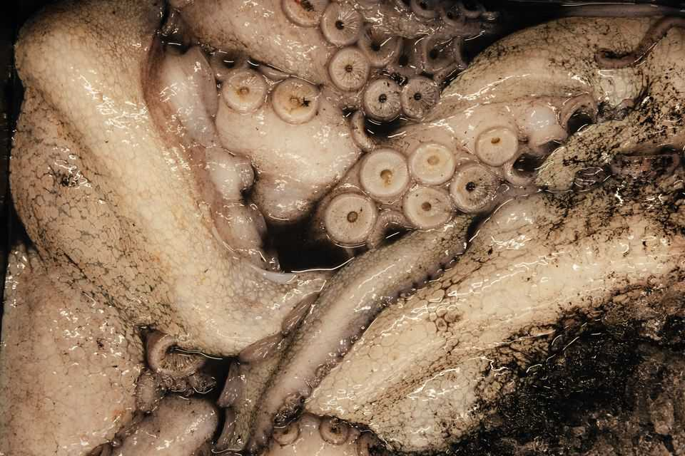

Warming seas are enticing octopus to British waters
But some fish are being pushed away

Sep 10th 2026
In Brixham’s fish market, burly men in yellow overalls lug around big white boxes. Each crate contains a different offering; some crab, perhaps, or hake. Yet one infamous species is absent. The number of octopuses off England’s south coast has ballooned in the past two years (see chart). Over 700 tonnes were landed in Brixham, a big fishing port, in the first seven months of 2026 alone, more than six times the annual average between 2021 and 2024. But this catch is sequestered in black boxes in its own special room.

Octopuses are the bad boys of British fishing. Their segregation is officially a matter of hygiene: they are inky and messy to handle. But fishermen have plenty of reasons to dislike them. The new arrivals have been ravaging the local shellfish population. Lobster fishermen haul up pots only to find that an octopus had got there first. Fishermen caught 50% fewer brown crabs and king scallops in south-western Britain in the first nine months of 2025 compared with the year before.
The octopus bloom is the most prominent example of how climate change is shifting which creatures choose to reside in British waters. The oceans are warming. The mean sea-surface temperature around England today is about 2.2°C warmer than average conditions over the previous 40 years. This has meant that species that used to spend their time in hotter places are finding it easier to survive farther north. Octopuses were historically more commonly found farther south. But when winds blew their young across the English Channel, they thrived in the newly warm waters. The heat has helped to lure back bluefin tuna, which were once abundant off the British coast before overfishing drove them away.
However, like many land-lubbing Britons, some long-term aquatic residents are finding it hard to withstand the heat. Bryce Stewart of the Marine Biology Association says this is particularly true off the south coast, a boundary area where cooler-water species such as cod and haddock are pushing up against the limits of what they are adapted to. As seas have warmed, these species have retreated north.

Adapting to these changes has not been straightforward for the fishing industry. Although some boats have profited handsomely from the octopus invasion, many others have seen the crab and lobster that their livelihoods rely on vanish. Infrastructure is struggling to catch up. Most octopuses from Brixham are sent to Spain for processing, as Britain lacks enough plants to do so. British diets also change slowly; octopus is a rare sight on the menus in Brixham restaurants. Battered octopus and chips might one day become a seaside staple, but not yet.
In the long run, the British fishing industry will survive. Fishermen might catch fewer cod, haddock and plaice. But the nets will fill up with climate refugees such as sardines, sea bass and octopus, fleeing sweltering seas. Dr Stewart points out that the real losers will probably be fishermen from tropical countries like the Seychelles. They too will lose many fish to cooler climates, and there are no warmer waters to send them replacements. ■